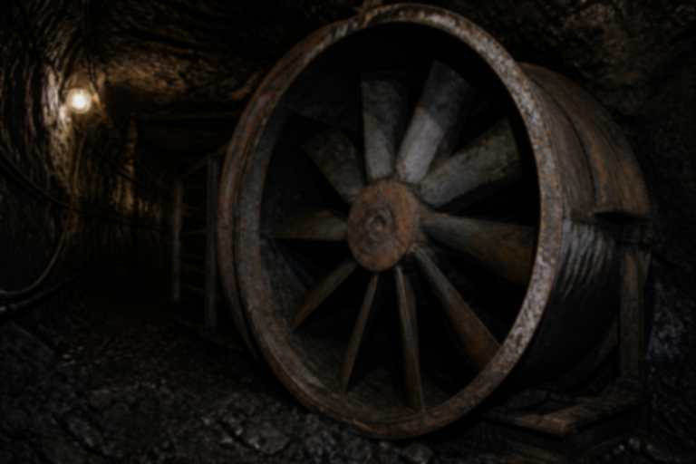

不当神罚 不当索祭

十二月九日十六点五十分，西翼局部风机停转。曲培义在调度室电话报矿长办公室，录音摘录：「风机停了，霍班已经下去，先撤人。」对方回复先稳住，晚上庙里还有事。
十七点后燃爆。本页只证明地面调度知道通风异常，不能证明曲培义入井。瓦斯按浓度和火源写，不按窑神写。
钱不器：有人要把本页改成「神示停风」，被挡。县志若采用口述八人，请至少把风机停转留在注释。
摘录有删节 全文在鉴定袋 13/39